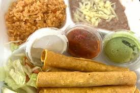

Using some kitchen product
published on
this is a smart color full kitchen
Kitchen electronic products range from large appliances like refrigerators and dishwashers to small countertop gadgets like blenders, air fryers, coffee makers, and toasters
Delicias food
"Delicias food" refers to various businesses, often bakeries, restaurants, or food suppliers, using the Spanish word for "delicacies," ranging from bakery chains
Generally, "delicias" implies high-quality, tasty, or fine foods, encompassing baked goods, savory dishes, and sweets.
delicias cafe food

"Delicias Cafe" or "Delicias Restaurant" is a common name for a number of independent Mexican and Latin American food establishments across the United States. They generally offer a variety of traditional dishes in a casual, family-oriented atmosphere.